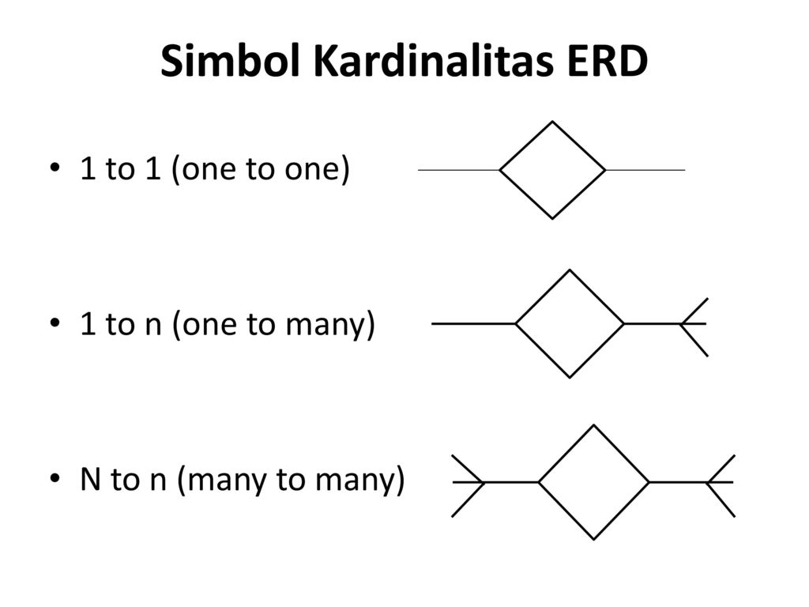

Relasi menggambarkan keterkaitan antara dua atau lebih entitas dalam basis data. Relasi menunjukkan bagaimana entitas-entitas tersebut berinteraksi satu sama lain atau bagaimana mereka terhubung dalam konteks aplikasi atau sistem yang dirancang. Dalam ERD, relasi biasanya digambarkan sebagai garis yang menghubungkan dua entitas. Contoh relasi meliputi "Pegawai bekerja di Departemen," "Pelanggan melakukan Pemesanan," dan sebagainya. Relasi juga dapat memiliki atribut khusus yang menyimpan informasi tambahan tentang bagaimana entitas-entitas tersebut berhubungan satu sama lain.
Dalam ERD, hubungan (relasi) dapat terdiri dari sejumlah entitas yang disebut dengan derajad relasi. Derajad relasi maksimum disebut dengan kardinalitas sedangkan derajad minimum disebut dengan modalitas. Jadi kardinalitas relasi menunjukkan jumlah maksimum entitas yang dapat berelasi dengan entitas lain.
Terdapat tiga jenis relasi yang digunakan dalam ERD dan perlu kamu ketahui, berikut adalah jenisnya.

-
One to One
One to one berarti setiap entitas hanya dapat memiliki relasi dengan satu entitas lain. Contohnya seperti data mahasiswa dengan NIM (Nomor Induk Mahasiswa).
-
One to Many
One to many memiliki arti satu entitas dapat memiliki relasi dengan beberapa entitas, begitu pula sebaliknya. Contoh dari implementasi one to many ini adalah jurusan dengan mahasiswanya.
-
Many to Many
Many to many memiliki arti setiap entitas yang ada dapat memiliki relasi dengan entitas lain, begitu pula sebaliknya. Contoh dari relasi ini adalah mahasiswa dengan data terkait UKM (Unit Kegiatan Mahasiswa).
Relasi many-to-many dalam basis data dapat menyebabkan masalah dan inefisiensi. Berikut adalah beberapa alasan mengapa hubungan many-to-many tidak dianggap sebagai desain database yang baik:
-
Duplikasi Data
Relasi many-to-many dapat menyebabkan duplikasi data, yang dapat menyebabkan inkonsistensi dan redundansi dalam database. Hal ini dapat mengakibatkan hasil query yang salah dan menghabiskan sumber daya komputasi yang berlebihan.
-
Sulit Melakukan Query
Relasi many-to-many dapat menyulitkan untuk melakukan query basis data secara efisien.
-
Kurangnya Konsistensi Data
Relasi many-to-many dapat menyebabkan kurangnya konsistensi data, karena mungkin ada beberapa cara untuk menghubungkan entitas-entitas tersebut, dan hal ini dapat menyulitkan untuk menjaga integritas data.
-
Ambiguitas
Dalam hubungan many-to-many, sulit untuk menggambarkan dengan jelas bagaimana dua entitas terkait secara langsung. Oleh karena itu, seringkali lebih baik untuk menguraikan hubungan ini menjadi dua hubungan one-to-many yang lebih mudah dimengerti.
-
Kesulitan dalam Memelihara Integritas Data
Memelihara integritas data (seperti menghindari duplikasi data atau konflik data) lebih sulit dalam hubungan many-to-many. Penggunaan tabel penengah dapat mempermudah pengelolaan data.